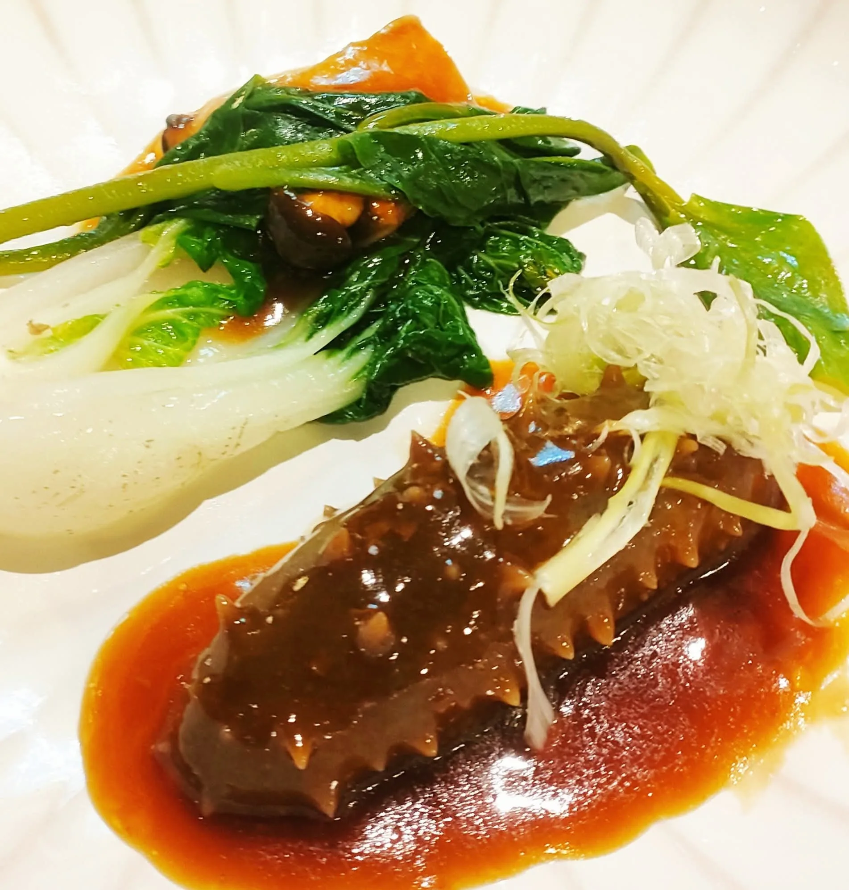

客製化料理，很多人理解成「在固定菜單裡加減選項」，但我們認為真正的客製化，是從賓客組成跟場合性質重新設計菜單，而不是在既有框架裡打勾勾選。
同樣是十人桌，家族壽宴跟企業VIP接待需要的節奏、擺盤語言、菜色份量完全不同，客製化的起點是先了解這場宴會「想被記住的感覺」，再回推菜單怎麼設計。
會先問賓客有沒有飲食禁忌跟特別偏好，其次才問預算跟等級。順序反過來的話，很容易做出一份「看起來豪華但其實不適合這群賓客」的菜單，這是我們特別在意的細節。
很多人以為客製化就是「什麼都能改」，但實際上真正影響體驗的，往往是那些不會寫在菜單上的小地方——上菜節奏跟賓客交談的空檔搭不搭、擺盤色系跟場地氛圍協不協調、甚至是主廚上菜時要不要多做停留解說。這些細節單獨看都不起眼，加起來卻是決定一場餐宴「有沒有被記住」的關鍵。
如果你對客製化料理真正的意思還有其他疑問，歡迎直接聯繫舒苑團隊，會有專人依你的實際需求提供更詳細的說明與建議。
提供活動日期、人數與場地，我們將提供最適合的私廚方案與報價建議。